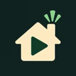

Set up MartinFlix
Pick a task, adjust anything you like, then run the commands on your Linux host. Every step starts with a sensible default, and your answers never leave this browser tab.

MartinFlixPick a task, adjust anything you like, then run the commands on your Linux host. Every step starts with a sensible default, and your answers never leave this browser tab.